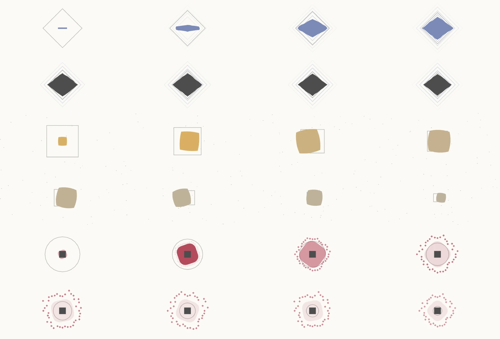
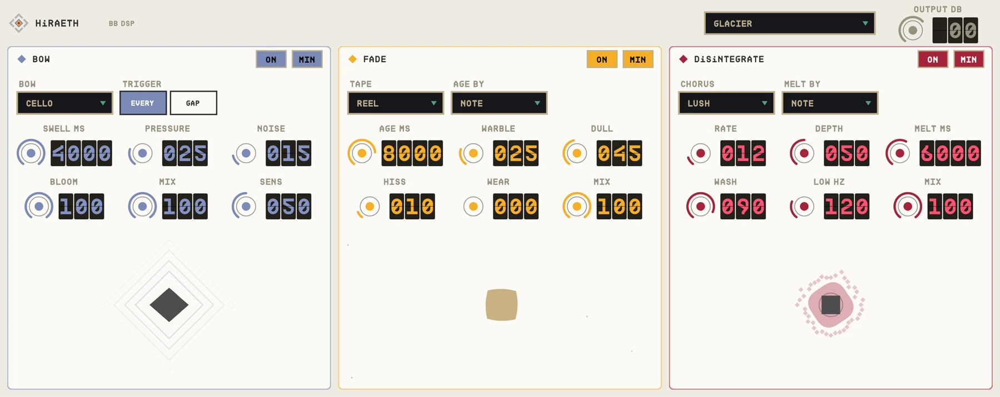

OVERVIEW
HiRAETH chains three effects that each change the longer a note lives. BOW removes your pick attack and swells notes in like a bowed string. FADE ages a note as it rings, from fresh to worn tape. DiSiNTEGRATE starts as a chorus and melts into a wash.
Each card has its own ON switch and can be minimised, so you can use one, two or all three.


QUICK START
- 01Insert HiRAETH on guitar, keys or vocals.
- 02Pick a preset, or switch cards on one at a time.
- 03Hold notes: each card shows what it is doing as the note ages.
- 04Set OUTPUT in the header.
HOW IT WORKS
Lookahead attack removal
BOW looks 6 ms ahead to dip the gain before each pick attack, then swells the note in.
Ages with time
FADE and DiSiNTEGRATE count each note's age by NOTE, PHRASE or BAR (from the host's position).
Low end stays put
DiSiNTEGRATE keeps everything below LOW HZ centred and un-chorused.
CONTROLS
Values in the dark wells are the defaults.
BOW
BOWCELLO / VIOLA / BASS
CELLO
Character of the swell and bow noise.
TRIGGEREVERY / GAP
EVERY
Swell every note, or only after a gap. SENS sets detection.
SWELL MS20-4000 ms
600
Swell time.
PRESSURE0-100%
50
Opens a low-pass, like pressing harder with the bow.
NOISE0-100%
35
Bow grain made from the note itself.
BLOOM0-100%
45
Reverb behind the bow.
MIX0-100%
100
Card mix.
FADE
TAPECASSETTE / REEL / VHS
CASSETTE
Kind of wear.
AGE BYNOTE / PHRASE / BAR
NOTE
What resets the clock.
AGE MS100-9999 ms
3000
How long until fully aged.
WARBLE0-100%
40
Wow and flutter, eased in so new notes start steady.
DULL0-100%
45
Treble loss.
HISS0-100%
25
Gated tape hiss.
WEAR0-100%
15
Saturation and dropouts.
MIX0-100%
100
Card mix.
DiSiNTEGRATE
CHORUSCLASSIC / LUSH / BASS
CLASSIC
Chorus voicing.
MELT BYNOTE / PHRASE / BAR
NOTE
What resets the melt.
RATE / DEPTH0-100%
30 / 50
Chorus speed and depth.
MELT MS100-9999 ms
2500
Time until the chorus melts into a wash.
WASH0-100%
60
How much melts.
LOW HZ20-400 Hz
120
Below this stays centred and dry.
MIX0-100%
100
Card mix.
TIPS
- BOW alone on clean guitar is an instant volume-pedal swell.
- FADE by PHRASE makes the end of every line sound like an old memory.
SPECS
- TYPE
- Audio effect (AU aufx), VST3, Standalone
- LATENCY
- 576 samples at 48 kHz
- OUTPUT
- Stereo